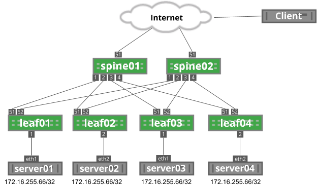
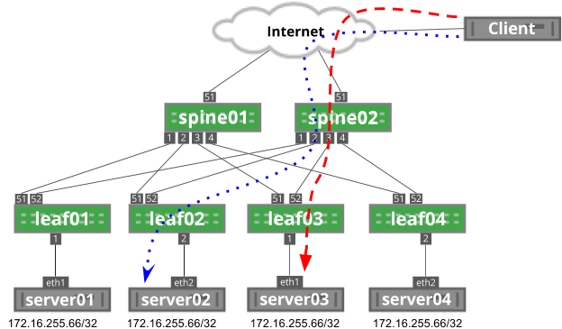
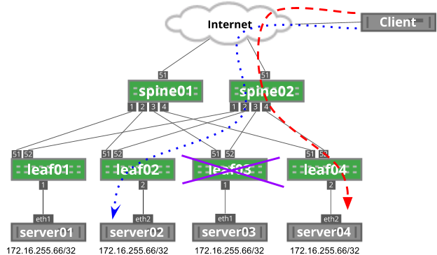
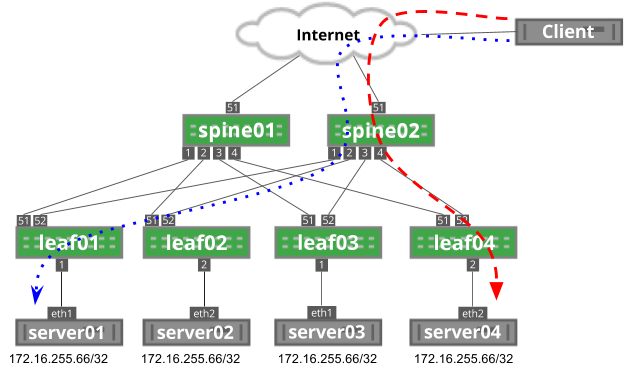
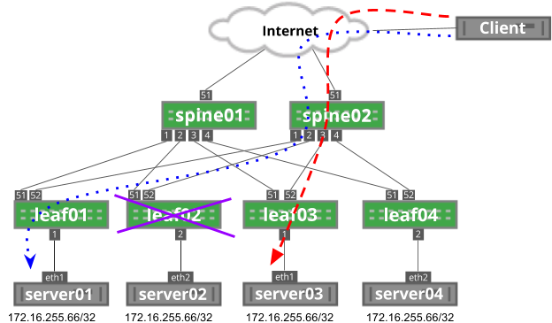
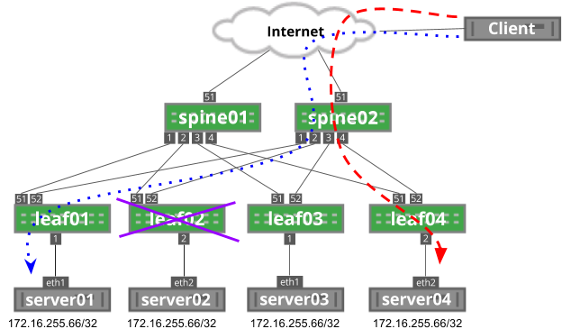

Anycast Design Guide
Cumulus Networks' Routing on the Host provides the ability to run OSPF or BGP directly on server hosts. This can enable a network architecture known as anycast, where many servers can provide the same service without needing layer 2 extensions or load balancer appliances.
Anycast is not a new protocol or protocol implementation and does not require any additional network configuration. Anycast leverages the equal cost multipath (ECMP) capabilities inherent in layer 3 networks to provide stateless load sharing services.
The following image depicts an example anycast network. Each server is advertising the 172.16.255.66/32 anycast IP address.

Anycast Architecture
Anycast relies on layer 3 equal cost multipath functionality to provide load sharing throughout the network. Each server announces a route for a service. As the route is propagated through the network, each network device sees the route as originating from multiple places. As an end user connects to the anycast IP, each network device performs a hardware hash of the layer 3 and layer 4 headers to determine which path to use.
Every packet in a flow from an end user has the same source and destination IP address as well as source and destination port numbers. The hash performed by the network devices results in the same answer for every packet, ensuring all packets in a flow are sent to the same destination.
In the following image, the client initiates two flows: the blue, dotted flow and the red dashed flow. Each flow has the same source IP address (the client’s IP address), destination IP address (172.16.255.66) and same destination port (depending on the service; for example, DNS is port 53). Each flow has a unique source port generated by the client.

In this example, each flow hashes to different servers based on this source port, which you can see when you run ip route show to the destination IP address:
cumulus@spine02$ ip route show 172.16.255.66172.16.255.66 proto zebra metric 20 nexthop via 169.254.64.0 dev swp1 weight 1 nexthop via 169.254.64.2 dev swp2 weight 1 nexthop via 169.254.64.2 dev swp3 weight 1 nexthop via 169.254.64.0 dev swp4 weight 1On a Cumulus Linux switch, you can see the hardware hash with the cl-ecmpcalc command. In Figure 2, two flows originate from a remote user destined to the anycast IP address. Each session has a different source port. Using the cl-ecmpcalc command, you can see that the sessions were hashed to different egress ports.
cumulus@spine02$ sudo cl-ecmpcalc -p udp -s 10.2.0.100 --sport 32700 -d 172.31.255.66 --dport 53 -i swp51ecmpcalc: will query hardwareswp2cumulus@spine02$ sudo cl-ecmpcalc -p udp -s 10.2.0.100 --sport 31884 -d 172.31.255.66 --dport 53 -i swp51ecmpcalc: will query hardwareswp3Anycast with TCP and UDP
A key component to the functionality and cost effective nature of anycast is that the network does not maintain state for flows. Every packet is handled individually through the routing table, saving memory and resources that would be required to track individual flows, similar to the functionality of a load balancing appliance.
As previously described, every packet in a flow hashes to the same next hop. However, if that next hop is no longer valid, the traffic flows to another anycast next hop instead. For example, in the image below, if leaf03 fails, traffic flows to a different anycast address; in this case, server04:

For stateless applications that rely on UDP, like DNS, this does not present a problem. However, for stateful applications that rely on TCP, like HTTP, this breaks any existing traffic flows, such as a file download. If the TCP three-way handshake was established on server03, after the failure, server04 would have no connection built and would send a TCP reset message back to the client, restarting the session.
This is not to say that it is not possible to use TCP-based applications for anycast. However, TCP applications in an anycast environment should have short-lived flows (measured in seconds or less) to reduce the impact of network changes or failures.
Resilient Hashing
Resilient hashing provides a method to prevent failures from impacting the hash result of unrelated flows. However, resilient hashing does not prevent rehashing when new next hops are added.
As previously mentioned, the hardware hashing function determines which path gets used for a given flow. The simplified version of that hash is the combination of protocol, source IP address, destination IP address, source layer 4 port and destination layer 4 port. The full hashing function includes not only these fields but also the list of possible layer 3 next hop addresses. The hash result is passed through a modulo of the number of next hop addresses. If the number of next hop addresses changes, through either addition or subtraction of the next hops, this changes the hash result for all traffic, including flows that have already established.
Continuing with the example in Figure 3, leaf03 is in a failed state, so traffic is hashing to server04. This is a result of the hash considering three possible next hop IPs (leaf01, leaf02, leaf04). When leaf03 is brought back online, the number of possible next hop IPs grows to four. This changes the modulo value that is part of the hashing function, which may result in traffic being sent to a different server, even if previously unaffected by the change.
As you can see below, leaf03 is in a failed state. The blue dotted flow uses leaf02 to reach server02.

As leaf03 is brought back into service, the hashing function on spine02 changes, impacting the blue dotted flow:

Just as the addition of a device can impact unrelated traffic, the removal of a device can also impact unrelated traffic, since again, the modulo of the hash function is changed. You can see this below, where the blue dotted flow goes through leaf01 and the red dashed line goes through leaf04.

Now, leaf02 has failed. As a result, the modulo on spine02 has changed from four possible next hops to only three next hops. In this example, the red dashed line has rehashed to leaf03:

To help solve this issue, resilient hashing can prevent traffic flows from shifting on unrelated failure scenarios. With resilient hashing enabled, the failure of leaf02 does not impact both existing flows, since they do not currently flow through leaf02:

Although resilient hashing can prevent rehashing on next hop failure, it cannot prevent rehashing on next hop addition.
You can read more information on resilient hashing in the ECMP chapter.
Applications for Anycast
As previously mentioned, UDP-based applications are great candidates for anycast architectures, such as NTP or DNS.
When considering applications to be deployed in an anycast scenario, the first two questions to answer are:
-
Whether the application relies on TCP for proper sequencing of data.
-
Whether the application relies on more than one session as part of the application.
Applications with Multiple Connections
The network has no knowledge of any sessions or relationships between different sessions for the same application. This affects protocols that rely on more than one TCP or UDP connection to function properly — one example being FTP.
FTP data transfers require two connections: one for control and one for the file transfer. These two connections are independent, with their own TCP ports. Consider the scenario where an FTP server was deployed in an anycast architecture. When the secondary data connection is initiated, the traffic is destined initially to the same FTP server IP address, but the network hashes this traffic as a new, unique flow because the ports are different. This may result in the new session ending up on a new server. The new server would only accept that data connection if the FTP server application was capable of robust information sharing, as it has no history of the original request in the control session.
Initiating Traffic vs. Receiving Traffic
It is also important to understand that an outbound TCP session should never be initiated over an anycast IP address, as traffic that originates from an anycast IP address may not return to the same anycast server after the network hash. Contrast this with inbound sessions, where the network hash is the same for all packets in a flow, so the inbound traffic will hash to the same anycast server.
TCP and Anycast
TCP-based applications can be used with anycast, with the following recommendations:
-
TCP sessions are short lived.
-
The impact of a failed session or TCP reset does not impact the application. For example, a web page refresh is acceptable.
-
There is application-level session management that is completely independent of the TCP session.
-
A redirection middleware layer handles incorrectly hashed flows.
TCP applications that have longer-lived flows should not be used as anycast services. For example:
-
FTP or other large file transfers.
-
Transactions that must be completed and journaled. For example, financial transactions.
-
Streaming media without application-level automated recovery.
It should be noted that anycast TCP is possible and has been implemented by a number of organizations, one notable example being LinkedIn.
Conclusion
Anycast can provide a low cost, highly scalable implementation for services. However, the limitations inherent in network-based ECMP makes anycast challenging to integrate with some applications. An anycast architecture is best suited for stateless applications or applications that are able to share session state at the application layer.